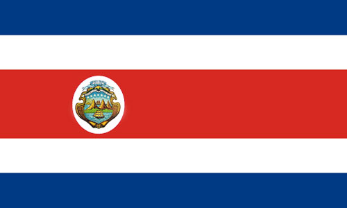

Simbolos patrios
Bandera Nacional
Declarado como símbolo nacional en 1948. La representación de los tres colores es la siguiente:
el azul representa el cielo que cubre y protege a Costa Rica; el blanco simboliza la paz que se vive en el país y la pureza de sus ideales;
el rojo evoca la energía,
valentía y el desprendimiento de las personas costarricenses cuando defienden su sistema democrático.

Escudo Nacional
Declarado como símbolo nacional en 1948, con el fin de
fortalecer la organización de los tres Poderes de la República y dotar de simbología al país ante sus relaciones internacionales.
Arbol Nacional
El Árbol de Guanacaste: Es símbolo nacional desde 1959.
Se le brindó tal estatus en un contexto donde el Estado había venido promovimiento campañas en defensa de los recursos naturales.

Historia
Los primeros habitantes de lo que ahora es Costa Rica formaron parte del área intermedia ubicada entre las regiones culturales mayas, mesoamericana y sudaméricana. Algunos historiadores han incluído el área conformada actualmente por las zonas sur y atlántica del país como de influencia sudamericana,
debido a la presencia de grupos que hablan lenguas chibchas. La evidencia más antigua de ocupaciones humanas en Costa Rica está asociada con la llegada de grupos de cazadores-recolectores entre el 10000 y el 7000 a. n. e., con evidencias arqueológicas (fabricación de herramientas de piedra) localizadas en el valle de Turrialba, con presencia de puntas de lanza tipo clovis (norteamericana) y cola de pez (sudamericana),
lo cual abre la posibilidad de que en esta zona convergieran dos tradiciones diferentes de cazadores especializados.
Entre el año 300 y 800 de nuestra era aparecen los primeros cacicazgos complejos, con presencia de aldeas grandes y obras de infraestructura (basamentos, calzadas y montículos funerarios). Se presenta la jerarquización de asentamientos, con aldeas principales y poblados secundarios, con linajes de poder hereditario y especialización de labores, con aparición de un cacique en la aldea principal y caciques secundarios en aldeas subordinadas.
El área conformada actualmente por las zonas sur y atlántica del país, han sido catalogadas por algunos historiadores como de influencia sudamericana, debido a la presencia de grupos que hablan lenguas chibchas. La actual provincia de Guanacaste se convirtió en la frontera sur de Mesoamérica con la llegada de los chorotegas para el período comprendido entre los años 900 al 1000 de nuestra era.
Por lo general los asentamientos humanos en este territorio fueron escasos y no contaron con la magnificencia en edificaciones e infraestructura de las poblaciones aztecas, mayas o incas; sin embargo al servir de puente cultural entre el sur y el norte del continente, el desarrollo de la orfebrería y la artesanía policromada en barro tuvieron un amplio desarrollo y bellísimos resultados.
Extensión Territorial
Costa Rica limita al norte con Nicaragua, al sureste con Panamá, al este con el mar Caribe y al oeste y suroeste con el Océano Pacífico. La Isla del Coco, en el Océano Pacífico, pertenece a Costa Rica.La costa del Mar Caribe, de 212 kilómetros de largo, se extiende de noreste a sureste y con ella se distinguen dos secciones: Río San Juan- Limón (que va del límite con Nicaragua a la ciudad de Limón) y Limón-Río Sixaola (de la ciudad de Limón al límite con Panamá).
La primera sección es un largo litoral que separa al mar de una serie de lagunas de agua dulce que son alimentadas por múltiples ríos.
En esta zona se hallan los Canales de Tortuguero, un sistema natural de canales y lagunas navegables de más de 110 kilómetros de extensión que son el hábitat de siete especies de tortugas.
En el centro de la costa oriental se localiza Limón, uno de los principales puertos del país.
El litoral Pacífico de Costa Rica cuenta con una extensión de más de 1200 kilómetros de costa, presenta variedad de paisajes, islas, golfos, puntas, manglares, ensenadas y penínsulas que se extienden de frontera a frontera, desde Bahía Salinas hasta Punta Burica y que originan gran cantidad de playas anchas.
Lista de Departamentos
Departamentos
1- San José
2- Alajuela
3- Cartago
4- Heredia
5- Guanacaste
6- Puntarenas
7- Limón
Lugares Turisticos
Volcán Poas
El Parque Nacional Volcán Poas es un destino obligado para quienes visitan Costa Rica;
tanto por la biodiversidad que aquí habita como por las actividades que pueden realizarse.
Su cráter es de una belleza innegable y también es uno de los más grandes en todo el planeta.
Durante tu estancia podrás apreciar las fumarolas que revelan la intensa actividad volcánica que sucede en el lugar,
no dudes en iniciar un recorrido en alguno de sus senderos, puedes realizarlo en la noche o en la madrugada.
Para llegar a este parque, toma la ruta nacional número dos que va de San José al Volcán Poas.

Volcán Arenal
El Arenal es un volcán localizado a unos 90 km de San José.
Con menos de 7,500 años de vida, se estima que es el más joven de Costa Rica, pero no por ello, menos impresionante.
Aunque en los últimos años ha sido el volcán más activo del país, durante siglos se consideró extinto y los visitantes caminaban por
sus senderos para admirar su flora y fauna.
Si bien el Arenal pasa por largos periodos de reposo, el turismo incrementa al mismo ritmo que la actividad volcánica;
pues todo el mundo quiere ver volar algo de lava.

Parque Nacional Manuel Antonio
A unos 157 km al sur de San José, se ubica el Parque Nacional Manuel Antonio. Tiene una extensión de 683 hectáreas en las que podrás
realizar caminatas, paseos a caballo, pesca o excursiones en kayak.
También podrás ver por ahí al famoso Mono Tití, una subespecie endémica que te robará el corazón